フロントドライブシャフト（4WD） 組み付け |
| 1. フロントドライブ シャフト ベアリング取り付け |
新品のドライブシャフト ベアリング ブラケット ホールスナップリングをインボードジョイントシャフトに通す。
| 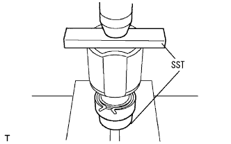 |
プレスおよびSSTを使用して、新品のドライブシャフトベアリングが端面に当たるまで、インボードジョイントASSYに圧入する。
| 2. フロントドライブ シャフト ホールスナップリング RH取り付け |
| 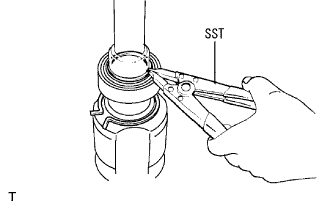 |
SSTを使用して、新品のフロントドライブ シャフト ホールスナップリング RHを取り付ける。
| 3. フロントドライブシャフトダスト カバー LH取り付け |
| 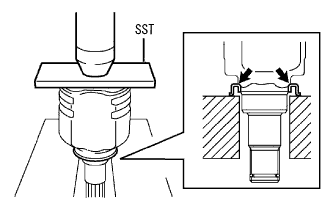 |
プレスおよびSSTを使用して、新品のドライブシャフトダストカバーをインボードジョイントの端面にあたるまで圧入する。
| 4. フロントドライブ シャフト ホールスナップリング LH取り付け |
新品のスナップリングを取り付ける。
| 5. フロントアクスル アウトボードジョイントブーツ取り付け |
アウトボードジョイントシャフトASSYのスプライン部に保護テープを巻く。
| 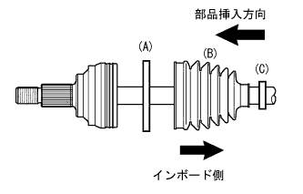 |
アウトボードジョイントASSYの新品部品を順に取り付ける。
アウトボードジョイントブーツクランプNo.2(A)
アウトボードジョイントブーツ(B)
アウトボードジョイントブーツクランプ(C)
アウトボードジョイントシャフトASSYのジョイント部およびブーツにグリースを充てんする。
アウトボードジョイントブーツをアウトボードジョイントシャフトASSYの溝に取り付ける。
| 6. フロントアクスル アウトボードジョイント ブーツ クランプ LH NO.2取り付け |
| 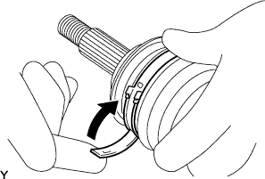 |
新品のフロントアクスル アウトボードジョイント ブーツ クランプLH No.2を使用して、アウトボードジョイントブーツに取り付け、レバーを仮曲げする｡
| 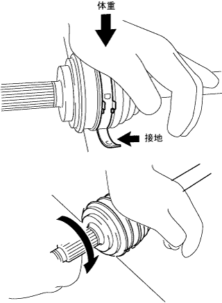 |
ジョイントを作業面に押し付けた状態のまま、片方の手に体重をのせて、前方に転がす要領でレバーを折り込みジョイントを作業面に押し付けた状態のまま“カチッ”と音がするまでジョイントを前方に転がす。
| 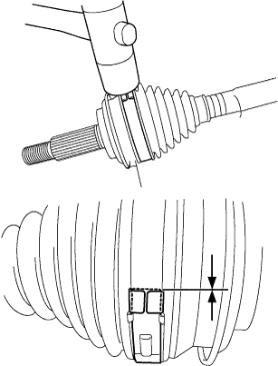 |
プラスチックハンマーでバックルをたたいてレバーの浮きを調整して、バックル端部とレバー終端部のすき間が面一になるようにする。
| 7. フロントアクスル アウトボードジョイント ブーツ クランプ RH NO.2取り付け |
| 8. フロントアクスル アウトボードジョイント ブーツ クランプ LH取り付け |
| 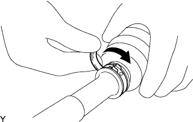 |
新品のフロントアクスル アウトボードジョイント ブーツ クランプLHを使用して、アウトボードジョイントブーツに取り付け、レバーを仮曲げする｡
| 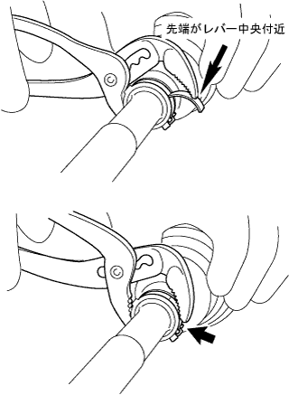 |
ウォーターポンププライヤーを使用して、“カチッ”と音がするまでフロントアクスル アウトボードジョイント ブーツ クランプをはさみ込み仮止めをする｡
| 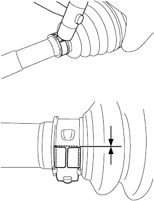 |
プラスチックハンマーでバックルたたいてレバーの浮きを調整し、バックル端部とレバー終端部のすき間が面一になるようにする。
| 9. フロントアクスル アウトボードジョイント ブーツ クランプ RH取り付け |
| 10. フロントドライブ シャフト ダンパ RH取り付け |
| 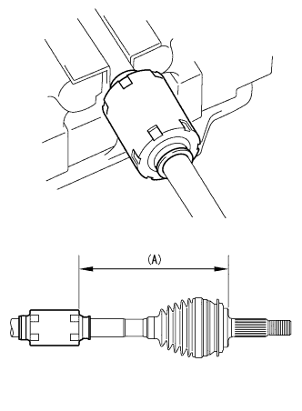 |
ドライブシャフトダンパを図の寸法(A)の位置に取り付ける。
| 11. ドライブシャフト ダンパ クランプ取り付け |
ワンタッチクランプの場合
ドライブシャフトダンパクランプをドライブシャフトダンパに取り付け、マイナスドライバーを使用してかしめる。
引っかけクランプの場合
ニードルノーズプライヤを使用して、クランプの凸部と凹部を引っかけて固定する。
| 12. フロントドライブ インボードジョイントASSY LH取り付け |
| 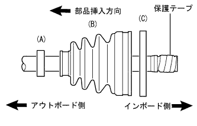 |
アウトボードジョイントシャフトASSYに次の新品部品を順に取り付ける。
インボードジョイントブーツクランプ(A)
インボードジョイントブーツ(B)
インボードジョイントブーツクランプNo.2(C)
アルミ板を介して、アウトボードジョイントシャフトASSYをバイスで固定する。
保護テープを取りはずす。
| 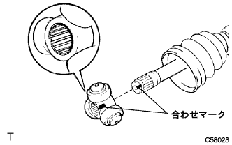 |
合わせマークを合わせて、トリポードジョイントASSYをアウトボードジョイントシャフトASSYに取り付ける。
ブラスバーおよびハンマーを使用して、トリポードジョイントASSYを打ち込む。
| 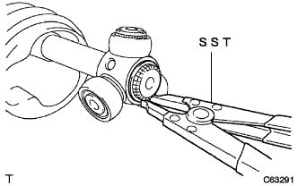 |
SSTを使用して、新品のインナシャフトスナップリングINNを取り付ける。
インボードジョイントASSYにグリースを充てんする。
| 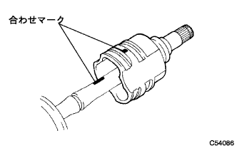 |
合わせマークを合わせて、インボードジョイントASSYをアウトボードジョイントシャフトASSYに取り付ける。
| 13. フロントドライブ インボードジョイントASSY RH取り付け |
| 14. フロントアクスルインボードジヨイントブーツ取り付け |
インボードジョイントブーツをインボードジョイントASSYおよびアウトボードジョイントシャフトASSYの溝に取り付ける。
| 15. フロントアクスル インボードジョイント ブーツ クランプ LH取り付け |
| 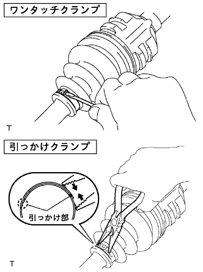 |
ワンタッチタイプの場合
インボードジョイントブーツクランプをインボードジョイントブーツに取り付け、マイナスドライバーを使用してかしめる。
引っかけタイプの場合
ニードルノーズプライヤを使用して、インボードジョイントブーツクランプLHの凸部と凹部を引っかけて固定する。
| 16. フロントアクスル インボードジョイント ブーツ クランプ RH取り付け |
| 17. フロントアクスル インボードジョイント ブーツ クランプ LH NO.2取り付け |
| 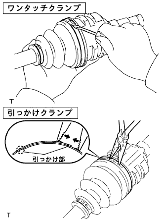 |
ワンタッチクランプの場合
インボードジョイントブーツクランプLH No.2をインボードジョイントブーツLHに取り付け、マイナスドライバーを使用してかしめる。
引っかけクランプの場合
ニードルノーズプライヤを使用して、インボードジョイントブーツクランプLH No.2の凸部と凹部を引っかけて固定する。
| 18. フロントアクスル インボードジョイント ブーツ クランプ RH NO.2取り付け |
LH側と同様の手順で行う。
| 19. フロントドライブシャフトASSY点検 |
| 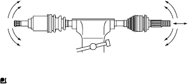 |
ジョイント部を上下、左右、軸方向に動かした際、スムースに作動し、著しいガタがないことを点検する。
ジョイントブーツの亀裂、損傷およびグリース漏れがないことを点検する。
| 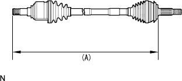 |
フロントドライブシャフトが下記の寸法(A)になっていることを点検する。
| LH(mm) | RH(mm) |
|---|---|
| 575.2 | 813.1 |